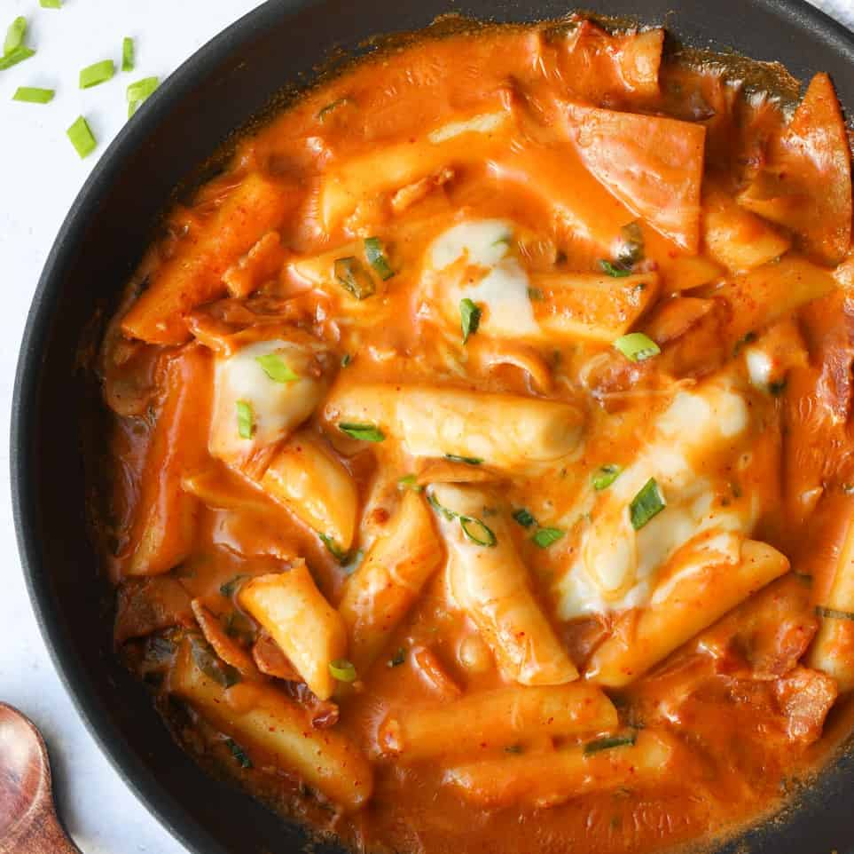

Tteokbokki

Description
It is made with rice cakes (garaetteok, cylinder-shaped rice cake), fish cakes, boiled egg, and seasoned with chile paste. The rice cakes are chewy and tender. It looks super spicy and, originally, it is! But you can control the amount of chile paste. You might be able to find it easily at food vendors on the street of Korea. There are always delicious dukbokki boiling and ready to go. Garnish with sesame seeds if you like.
Ingredients
- Sauce
- Chile paste
- White sugar
- Soy sauce
- Corn syrup
- Korean fish cakes
- Onion
- Green onion
- Water
- Dried anchovies
Steps
- Combine water and anchovies in a saucepan and bring to a boil. Cook for 10 minutes. Remove anchovies.
- Combine chile paste, sugar, soy sauce, and corn syrup in a bowl to make the sauce.
- Add rice cakes and onion to the anchovy water in the saucepan. Add sauce. Bring to a boil and cook for 5 minutes, stirring occasionally. Add spring onion and boil 3 minutes more.